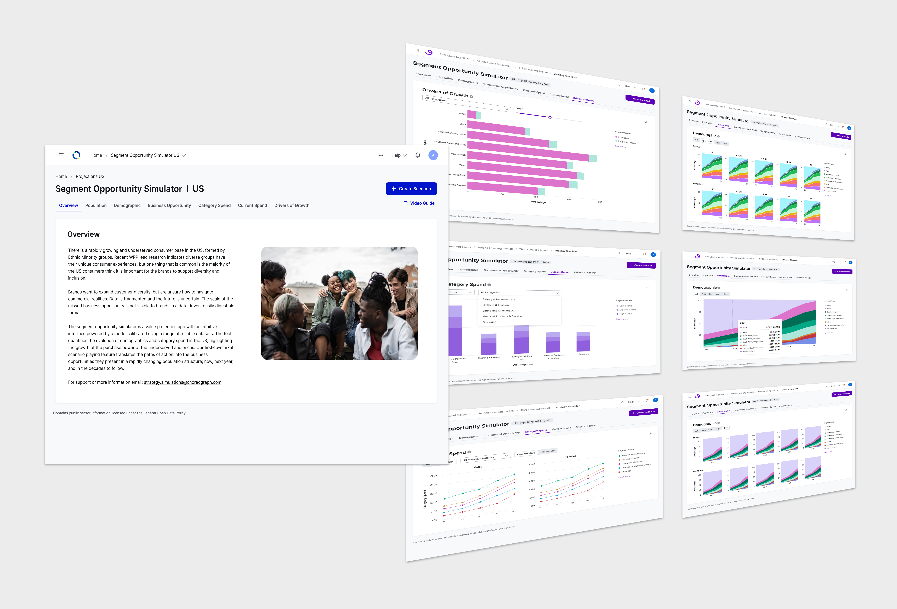
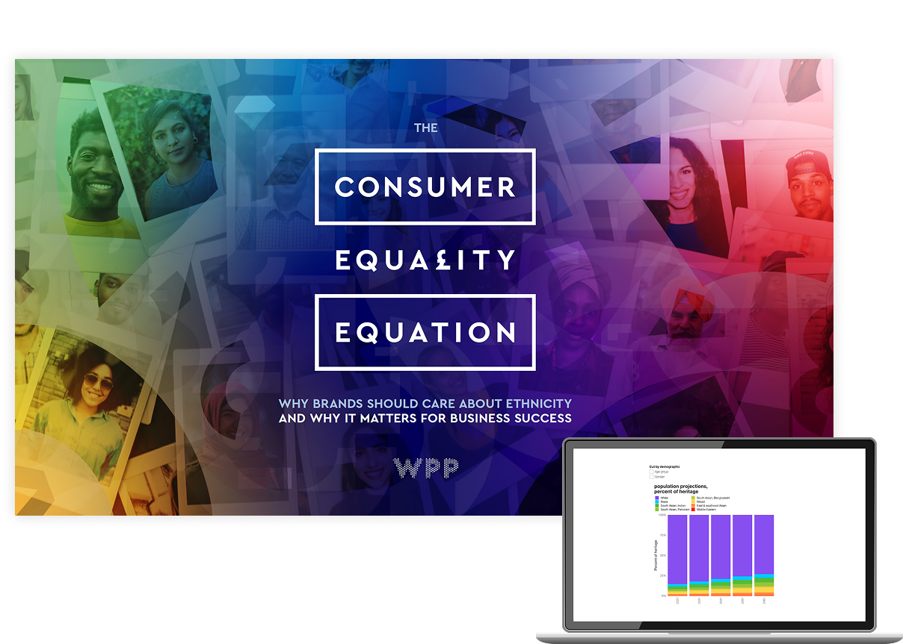
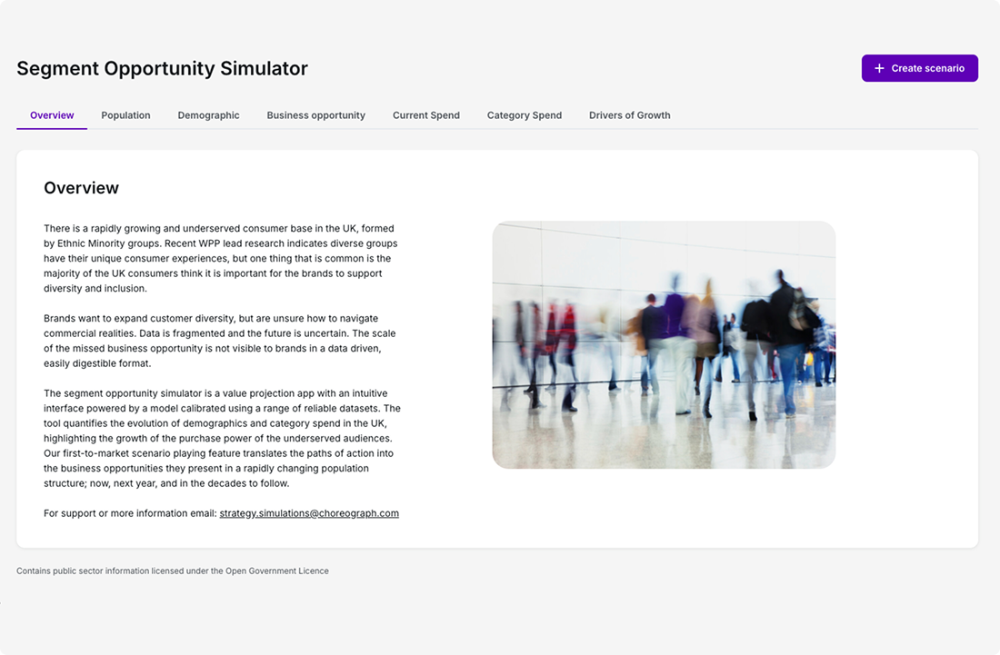
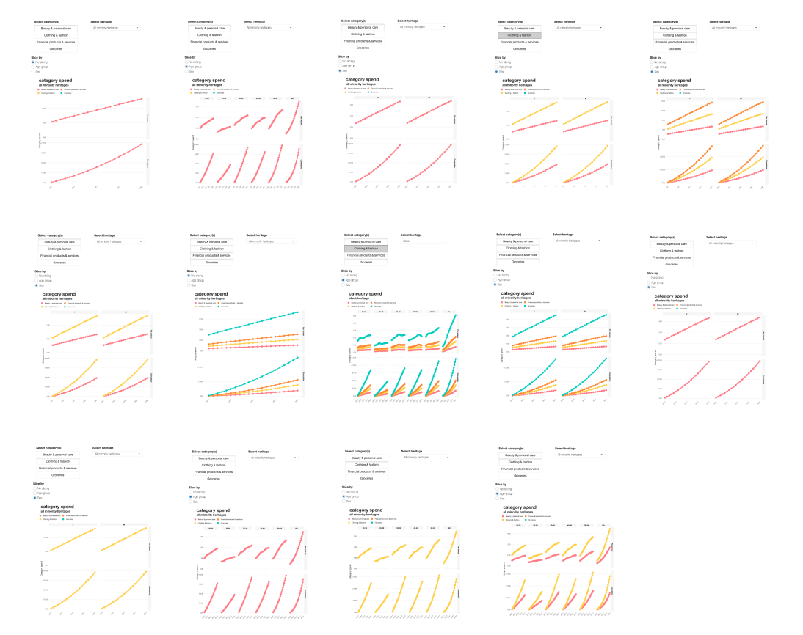
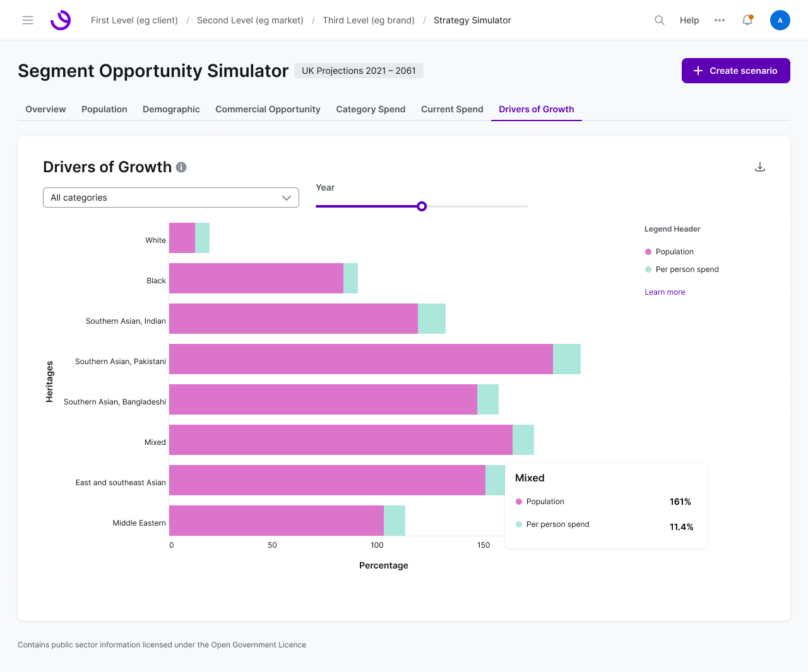
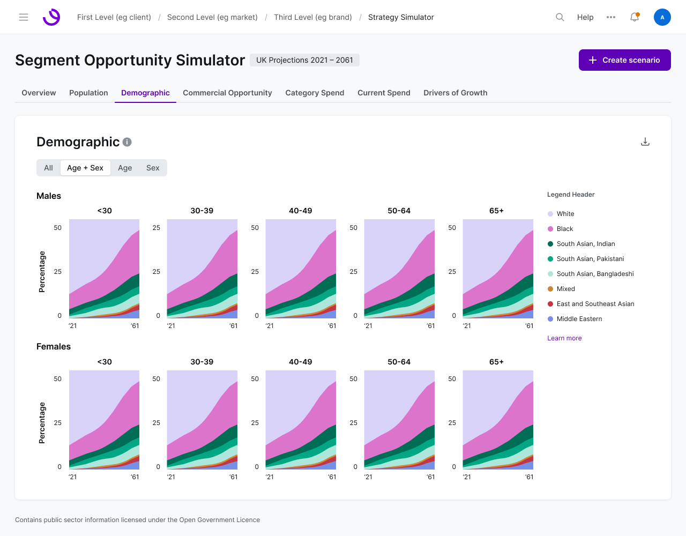
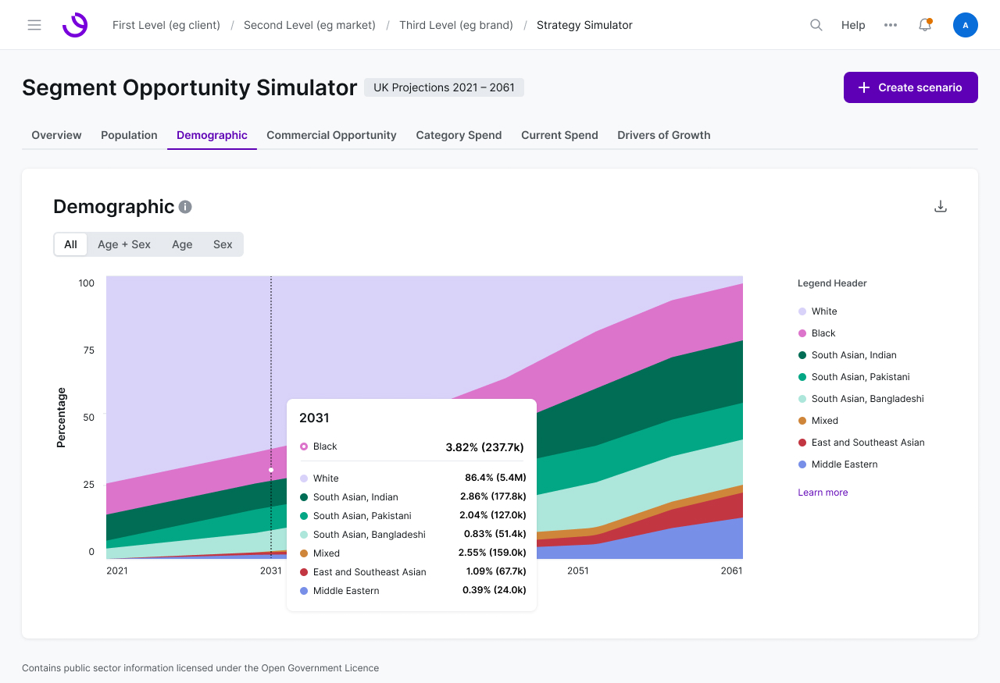
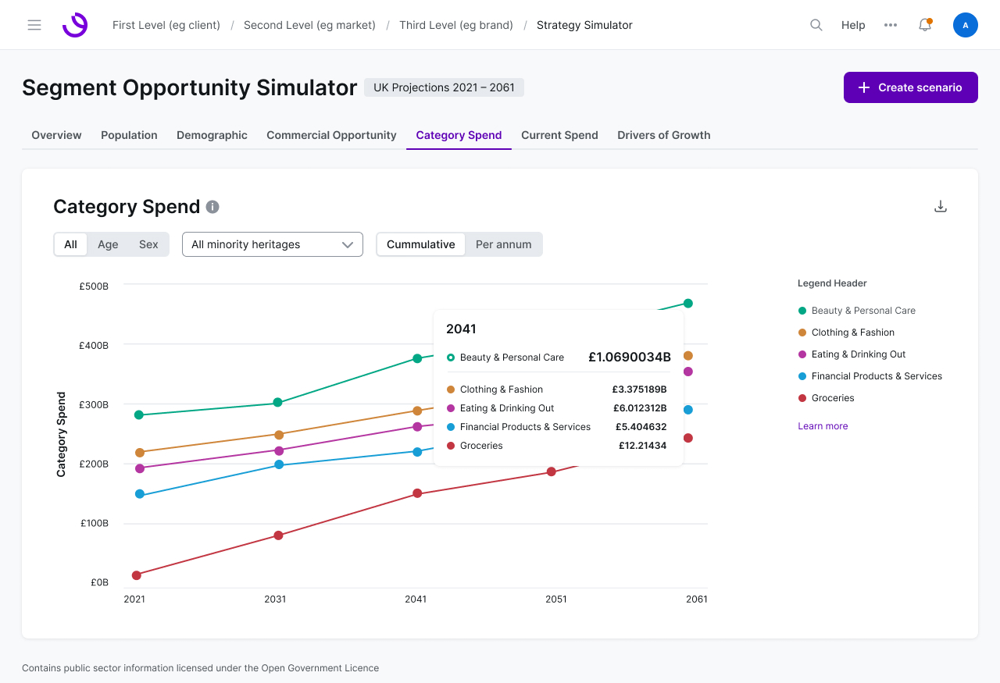
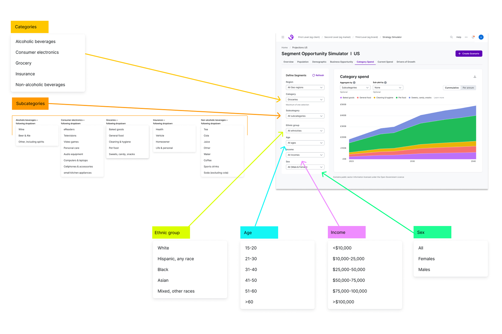

B2B Product Design
Segment Opportunity Simulator
Lead Product Designer · Timeframe: 6 months · Team: Data Science + Product

About — Born from a whitepaper
From research insight to pitch-winning product
The Segment Opportunity Simulator (SOS) grew out of "The Consumer Equality Equation," a WPP whitepaper revealing how ethnicity shapes the consumer experience. The story was used in multi-million-dollar advertising pitches spearheaded by Data Science, across both the UK and US markets.

The Consumer Equality Equation whitepaper
The Problem — Turning a data story into a B2B product
Making the invisible opportunity visible and actionable
Brands want to expand customer diversity, but the scale of the missed business opportunity wasn't visible in a data-driven, easily digestible format. I set out to create a self-service tool where a non-technical user could build their own scenarios and interpret the results just as easily.

Overview tab describing the underserved consumer base
Target Users — Advertising strategists, audience specialists, data analysts
Filling a gap no other tool addressed
The tool addressed untapped needs by letting users predict emerging demographic trends and simulate scenarios to evaluate the impact of inclusive marketing strategies, filling a gap no other tool in the broader company offering covered.
Product Architecture — Tabs, not vertical scroll
Building narrative without overwhelming users
Wireframes and quick prototypes compared a tabbed layout against a long vertical scroll to find the best structure for the story. Tabs won: they let each data visualization build on the previous chart without overwhelming the user with everything at once.
Tabbed layout
Vertical scroll
Under the Hood — A data visualization inventory
Cataloging what worked, designing what was missing
Since the product would be heavily chart-driven, I led an inventory of every visualization previously used in advertising pitches, then worked with Data Science to design the additional charts the story still needed.

Data visualization inventory from advertising pitches
Storytelling with Charts — A sequence built for cumulative results
Chart types chosen to reveal patterns, not just data points
To meet users' need to see cumulative results, I selected chart types specifically designed to display accumulated data, making overall trends and growth easy to understand at a glance.

Drivers of Growth visualization

Age and sex demographic breakdown

Demographic projection over time

Category spend analysis
Post-MVP — Scaling to multi-select filtering
Expanding flexibility for complex scenario building
Additional parameters were added post-MVP, enabling multi-selection and customizable combinations across categories, ethnic groups, age, income, and sex, a significant UI and UX update rolled into the US version of the tool.
Demographic filtering interface showing age, income, and sex breakouts in the US version
Filtering Dependencies — Ordering filters to match real use
Speed and usability through intelligent sequencing
In collaboration with Data Science, I mapped which filters depended on which, and the sequence they needed to follow to match real user use cases and optimize cloud calls keeping the tool fast and reliable at scale.

Filter dependency mapping diagram
Shipped to two markets
UK launched 2022, followed by the US
Walkthrough of the US version of the Segment Opportunity Simulator
Impact — From 3% to over 5% of reallocated media budgets
Billions reallocated, Atticus Award won
This product became one of Choreograph's initial offerings to new clients and major global brands, facilitating a shift in media budgets from roughly 3% to over 5% for diverse audiences influencing billions in reallocation and playing a crucial role in retaining and attracting top advertisers in the US and UK. The underlying original thinking went on to win the prestigious Atticus Award within WPP's global network.